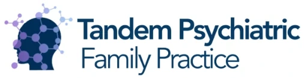
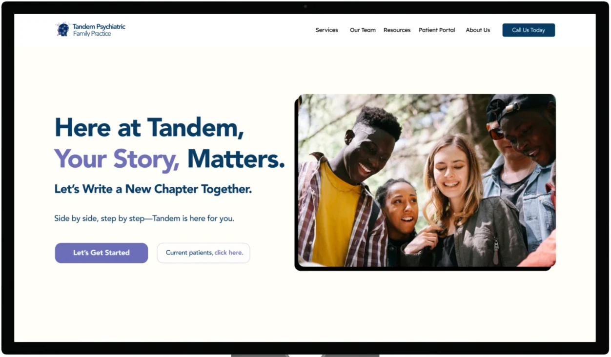
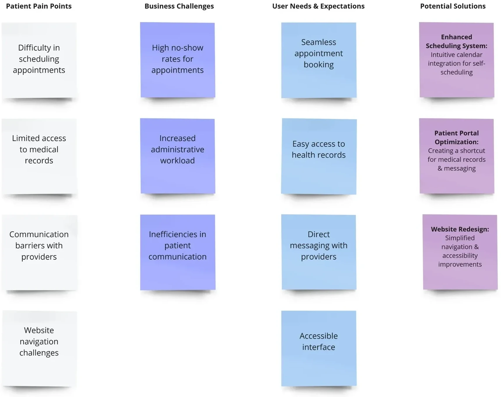
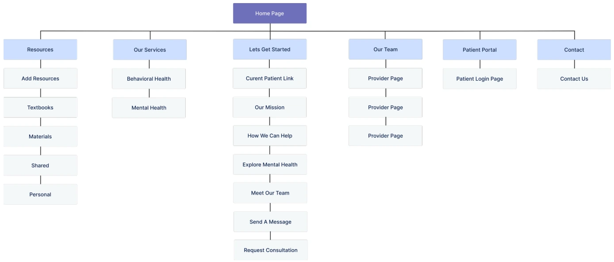
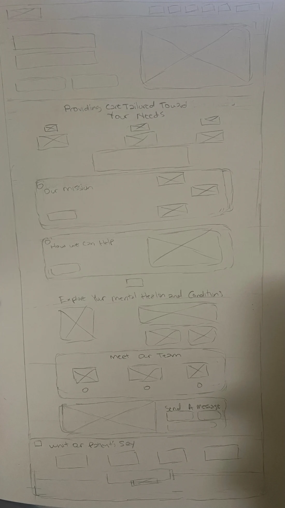
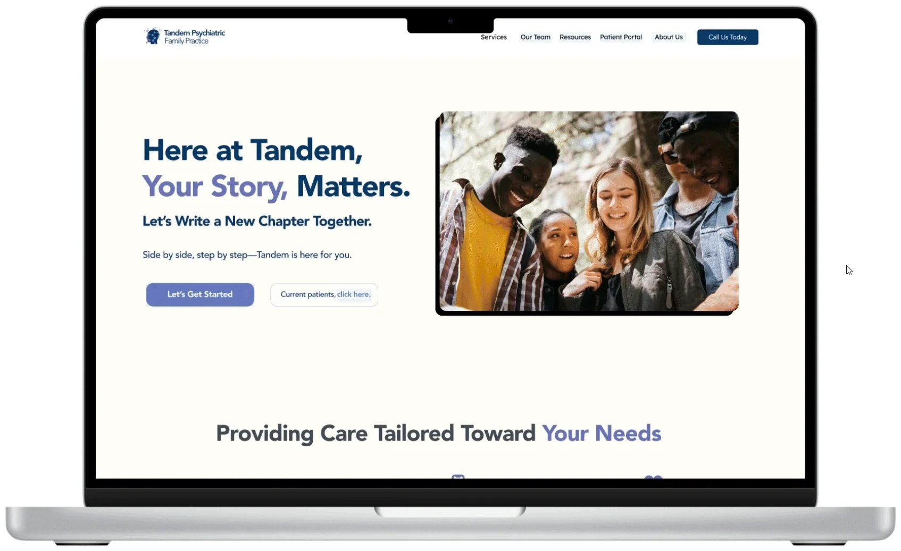
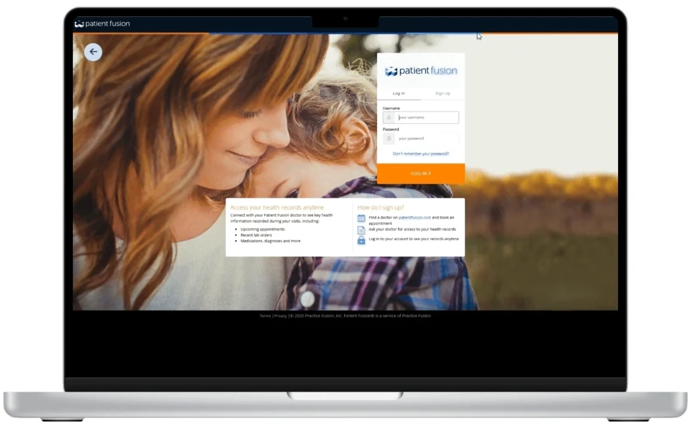
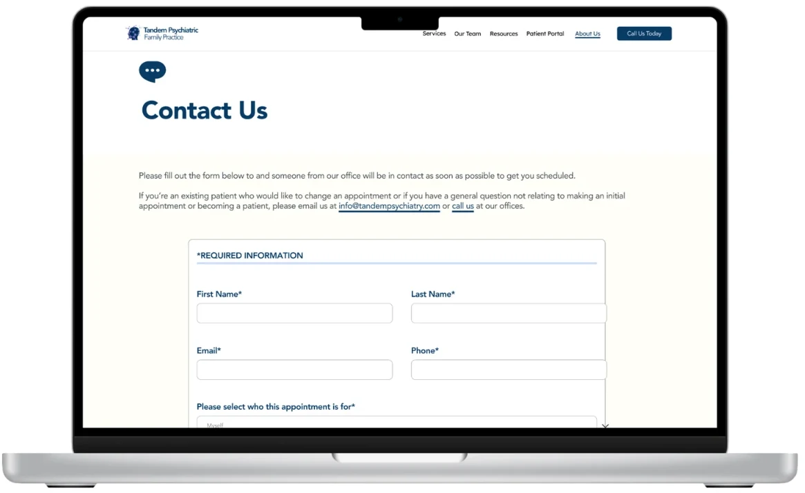
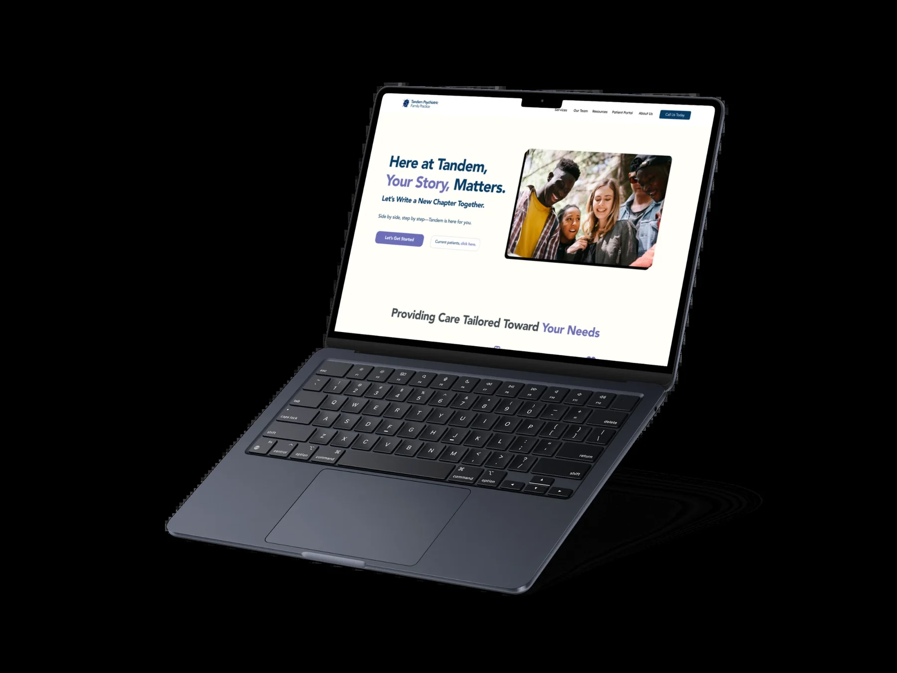

Patients & caregivers
People managing anxiety, depression, ADHD and other conditions, often booking for themselves and a child. Every extra step or phone call is harder when you’re already struggling.

01 Project introduction

Tandem is a psychiatric family practice treating addiction, anxiety, depression, bipolar disorder, ADHD and childhood mental health. I redesigned how patients schedule, reach their providers and find their records, while easing the load on the practice’s staff.

Patients couldn’t easily book, reach their provider or find lab results, and staff absorbed the calls.
Research with 20 patients, journey mapping, a new information architecture and a WCAG-compliant redesign.
Booking, provider messaging and records moved one click from the home page, on a WCAG-compliant site.
01 Project introduction · Project overview
Tandem is a psychiatric practice that helps people navigate mental health challenges such as addiction, anxiety, depression, bipolar disorder, ADHD and childhood mental health issues. Despite exceptional care, patients and caregivers were struggling with the digital tools available to them. Scheduling appointments, communicating with providers and reaching critical medical information were far from seamless. That meant frustration, missed appointments and a disjointed experience for caregivers and clinicians alike.
As Tandem’s UX Designer and Researcher, I was tasked with making this experience more accessible, efficient and empowering for patients and providers: streamlining scheduling, improving communication and making medical records easy to reach, while making the practice run more smoothly.
02 The problem · Project overview
Patients had trouble reaching their providers, managing appointments and finding important medical information.
Many missed appointments, got lost in a complex website, or couldn’t quickly message their doctors.
02 The problem
People managing anxiety, depression, ADHD and other conditions, often booking for themselves and a child. Every extra step or phone call is harder when you’re already struggling.
Missed appointments, repeated calls about scheduling and lab results, and messages scattered across phone and email, all taking time away from care.
02 The problem · Project overview
Streamline scheduling, strengthen provider communication and improve accessibility for a more seamless, patient-centered experience.
A secure “Contact Us” message page where patients can write to their doctor directly, improving communication and response times.
The practice’s existing patient service site brought into the main navigation, reducing admin work and patient confusion.
A refined information architecture and wireframes that improve navigation and the overall experience.
03 My role & approach
03 My role & approach · Project overview
I followed a structured UX process to keep the work user-centered and research-driven while aligning with business goals.
04 Research & insights · Empathize
To begin, I ran UX research to understand the challenges patients faced:
The survey covered 20 patients, gathering qualitative insight into their digital experience and pain points.
“I wish I could just send my doctor a quick message instead of waiting for a call back.”
“It’s frustrating that I have to go through multiple steps just to see my lab results.”
“The website is confusing, and I can’t find the information I need.”
“I missed my last appointment because I forgot the time, and I can’t find an easy way to check my next one.”
04 Research & insights · Define
The research pointed to two core personas:
24 · Graphic Designer
Justin was recently diagnosed with bipolar disorder and is working to establish a consistent care routine. As a freelancer, his schedule is unpredictable, and he often forgets appointments. He wants a mobile-friendly platform where he can quickly check availability, reschedule when needed and reach his provider easily. He prefers messaging over phone calls, so messaging his doctor directly is essential.
45 · High School Teacher
Sarah has been managing anxiety for several years while also caring for her teenage son, who has ADHD. She schedules appointments for both of them, and finds it frustrating to manage multiple appointments, find lab results and reach providers. She wants a simple, intuitive platform where she can check availability, message doctors and stay on top of her family’s mental health care.
I mapped the current patient journey to find where the system was failing and where there was room to improve.
| Stage | User goal | User actions | Emotions | Pain points | Opportunities |
|---|---|---|---|---|---|
| Awareness | Learn about Tandem and find mental health care | Searches online, asks for referrals, visits the website | Confused, unsure of next steps | Website lacks clear navigation and provider info | Improve site structure, add a “Find a Provider” page |
| Onboarding | Set up an account and understand services | Creates an account, tries to explore options | Frustrated by unclear steps | Complicated forms, login issues | Simplify onboarding with guided tutorials |
| Appointment booking | Schedule a visit with minimal effort | Tries to book online or calls the office | Stressed, annoyed | Hard-to-use scheduling, no reminders | One-click scheduling, automated confirmations |
| Pre-visit preparation | Prepare and complete forms | Fills out intake forms, reviews provider details | Anxious about missing paperwork | No digital intake, unclear instructions | Mobile-friendly digital forms, automated reminders |
| Consultation | Meet the provider and discuss concerns | Attends the session, takes notes, asks questions | Relieved but forgets key info | No easy way to track session notes | Post-visit summary in the patient portal |
| Post-visit follow-up | Review the summary and next steps | Looks for instructions, tries to message the provider | Confused, uncertain about next steps | Hard to find visit notes, delayed responses | Secure messaging, visit summaries |
| Ongoing engagement | Stay connected and manage care | Sends messages, checks the portal for updates | Confident in ongoing care | No real-time support, unclear medication reminders | Chat support, automated medication reminders |
05 Design decisions · Ideate
I led brainstorming sessions with the cross-functional team to turn the pain points into solutions:
These ideas became the foundation of our design and development strategy, keeping the solutions user-centered and aligned with business goals.

The affinity map organized insights from patient feedback, stakeholder interviews and research into pain points, business challenges and opportunities, revealing the patterns behind our design decisions.
Patients value quick, easy interactions with their providers.
Reducing administrative friction benefits patients and staff.
Improving accessibility can raise patient engagement.
I restructured Tandem’s information architecture to improve navigation, accessibility and usability for patients and providers. A simpler structure, with scheduling, messaging and medical records easy to find and a clear flow, raised engagement and reduced administrative friction.

05 Design decisions · Design
I sketched the home page on paper, then built interactive mockups in Figma to bring the concepts to life.
The sketch sets the order of the page: the hero, care tailored to your needs, our mission, how we can help, exploring your mental health, meet our team, send a message, and what our patients say.

05 Design decisions
BeforeBooking meant navigating a confusing site or calling the office, with no reminders.
AfterSimpler booking through the patient portal, now one click away in the main navigation.
BeforePatients waited on call-backs and couldn’t find lab results or visit notes.
AfterA secure Contact Us message page, a direct phone number, and lab results and visit summaries one click away in Patient Fusion.
BeforeThe site lacked clear navigation and provider information.
AfterA simpler structure with services, the care team and the patient portal in the main navigation.
06 Final experience · Design
High-fidelity prototypes with detailed UI and accessibility features, including adjustable font sizes, color contrast adjustments and screen reader compatibility.



07 Outcomes & reflection · Reflect
The redesign made booking, provider messaging and medical records easier to reach for patients, while easing the load on the practice’s staff.
Next, post-launch feedback will be essential to refining the platform and catching new pain points:
By tracking engagement and iterating on real needs, Tandem can keep delivering measurable impact in digital mental healthcare.

Healthy HandParaillelUT Health X CLIThe Helper BeesGeisingerNetflix Tudum Case Study